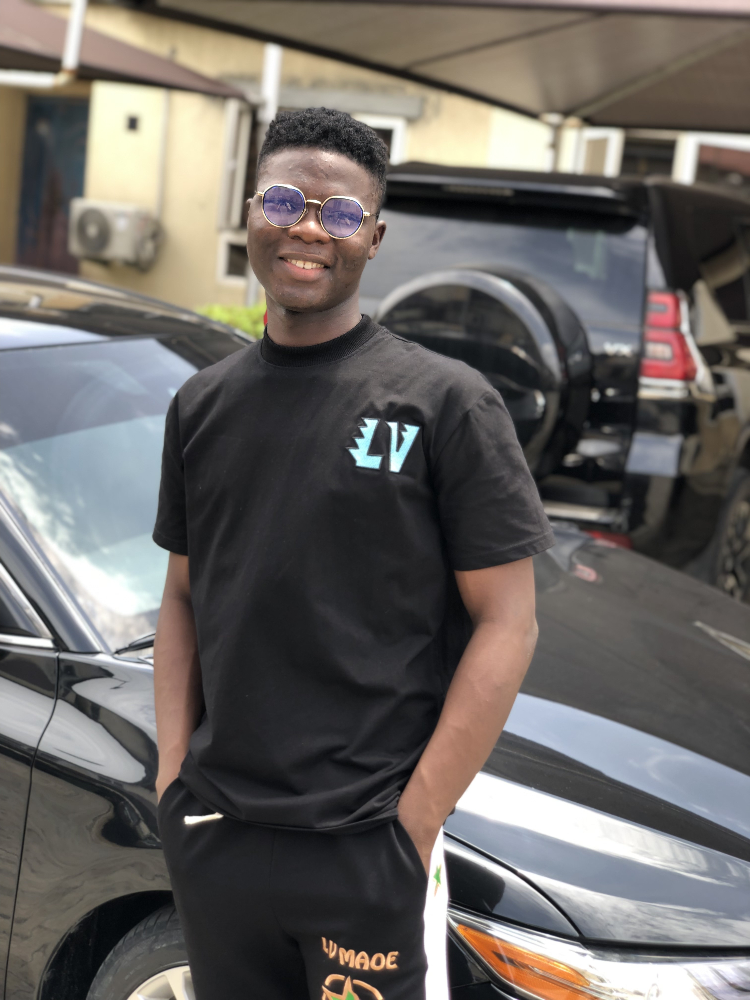
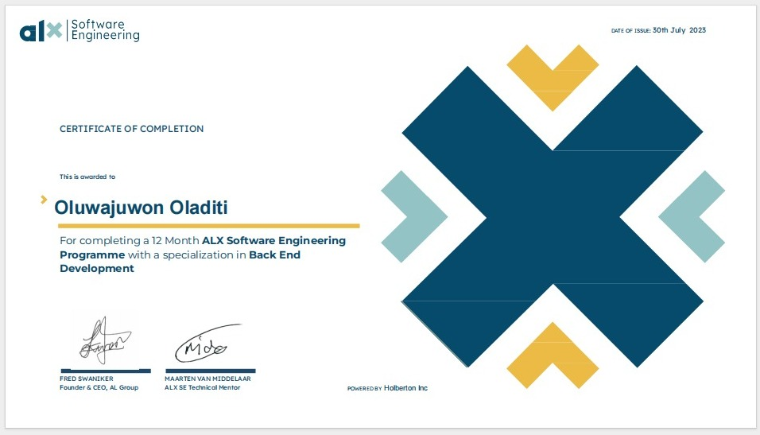

Oladiti Oluwajuwon's Portfolio

I am a Software Engineer and an SEO Content Writer
Summary
As an experienced writer with a passion for reading, I have cultivated my skills in various
writing genres. With five years of writing expertise, I excel in proofreading and possess a
keen eye for even the most obscure grammatical inconsistencies. I take pride in my ability to
deliver polished content that is both scholarly in nature and accessible to a diverse audience.
Guided by the principle that effective communication should be understandable to all, I strive
to avoid unnecessary jargon and prioritize clarity in every situation.
Experience
Full-Time Writer - Reportera News Nigeria (2023 - Present)
- Work full-time remotely as a writer for Reportera News Nigeria, specializing in the politics column.
- Write engaging articles covering various political topics and current events..
- Conduct in-depth research to produce well-informed and timely political content.
- Ensure articles are accurate, informative, and cater to a wide readership.
- Collaborate with the editorial team to refine and enhance articles for publication.
Contract Content Writer - Flexy Floors Business Enterprises (2021 - Present)
- Composed end-of-the-year appreciation messages and festive season greetings on behalf of Flexy Floors Business Enterprises.
- Crafted personalized messages to express gratitude and foster customer loyalty.
- Ensured the messages aligned with the company's brand voice and resonated with the target audience.
- Devised and implemented effective communication strategies to enhance customer engagement and foster meaningful connections, resulting in increased brand loyalty.
Freelance Writer - DreamsReading.com (2023)
- Provided freelance writing services for DreamsReading.com, a blog specializing in dream interpretation.
- Produced well-researched articles on different aspects of dream analysis and symbolism.
- Ensured content was engaging, informative, and tailored to the blog's audience.
- Collaborated with the editorial team to refine and polish articles for publication.
Post-Publication Editor - Idanoc.com (2022 -2023)
- Served as a post-publication editor for Idanoc, a blog focused on religious topics.
- Reviewed and edited published content to maintain quality, accuracy, and consistency.
- Conducted thorough proofreading to identify and correct errors in grammar, spelling, and punctuation.
- Verified the accuracy of information and ensured proper citations and references.
- Updated and revised content as needed to keep it relevant and up-to-date.
- Engaged with readers' comments and feedback, addressing inquiries and concerns promptly.
Contract Content Writer - First Class Academy (2019 - Present)
- Curated promotional ad messages for First Class Academy, focusing on driving enrollment and highlighting the institution's educational offerings.
- Crafted compelling and persuasive content to capture the attention of potential students and parents.
- Independently conceptualized and crafted impactful advertising campaigns to effectively promote services and drive engagement.
Freelance Writer - Touriago.com (2022)
- Contributed as a freelance writer to Touriago.com, a blog centered around travel, holidays, relaxation, and tours.
- Wrote captivating articles highlighting travel destinations, sharing personal experiences, and providing travel tips.
- Conducted thorough research to gather relevant information and insights for each article.
- Adapted writing style to match the blog's tone and appeal to the target audience.
Content Writer and Editor - CollegeLearners.com (2021 - 2022)
- Created engaging and informative content for CollegeLearners.com, a blog focused on educational information.
- Researched and wrote articles covering various educational topics, ensuring accuracy and clarity.
- Edited and proofread articles to maintain high-quality standards and adherence to style guidelines.
- Collaborated with a team of writers and editors to develop compelling and valuable content for the target audience.
Editor and Proofreader - Local Church Tracts (2018 - 2021)
- Served as an editor and proofreader for tracts used in my local church for a period of three years.
- Ensured accuracy, clarity, and consistency in written materials.
- Checked grammar, spelling, punctuation, and formatting to maintain professional presentation.
- Collaborated with the church leadership team to produce high-quality tracts for distribution.
Skills
Technological Proficiency
- Proficient in utilizing the latest writing tools and technologies to enhance productivity and efficiency.
- Well-versed in employing writing software, grammar checking tools, and online research platforms.
- Up-to-date with industry trends and advancements in writing tools, adapting them for effective content creation.
- Familiarity with content management systems (CMS) such as WordPress for seamless content publishing and management.
- Able to leverage writing tools and software to streamline editing, proofreading, and collaboration processes.
- Quick learner of new writing technologies, embracing innovation to deliver high-quality content.
Writing Skills
- Excellent written communication skills
- Proficient in crafting engaging and persuasive content
- Ability to adapt writing style to different audiences and purposes
- Strong storytelling abilities
- Adept at conducting thorough research for content creation
Editing and Proofreading Skills
- Meticulous attention to detail
- Proficient in grammar, punctuation, and spelling
- Ability to ensure consistency in tone, style, and formatting
- Skilled in identifying and correcting errors in grammar, syntax, and structure
Language and Linguistic Skills
- Strong command of the English language
- Vocabulary expansion and word choice
- Awareness of idiomatic expressions and colloquial language
- Familiarity with linguistic concepts and usage rules
- Ability to convey complex ideas in a clear and concise manner
Time and Project Management
- Efficient in managing multiple projects and meeting deadlines
- Strong organizational skills to prioritize tasks effectively
- Ability to work independently and meet client's expectations
- Familiarity with project management tools and software
- Detail-oriented approach to managing workflow and schedules
Collaboration and Communication
- Strong interpersonal skills for effective collaboration with clients and team members
- Ability to provide constructive feedback and guidance to writers
- Excellent written and verbal communication skills
- Proficient in understanding and interpreting client's requirements
- Ability to work with diverse individuals and maintain professional relationships
Research Skills
- Proficient in conducting thorough and accurate research
- Ability to gather information from reliable sources
- Skilled in evaluating and synthesizing information
- Familiarity with online research tools and databases
- Strong analytical skills to extract relevant data and insights
Certification
Online Software Engineering Course

Provider: ALX Africa
Duration: June 2022 - July 2023
Online CRM Course
Provider: Great Learning Academy
Duration: 2 weeks
Others